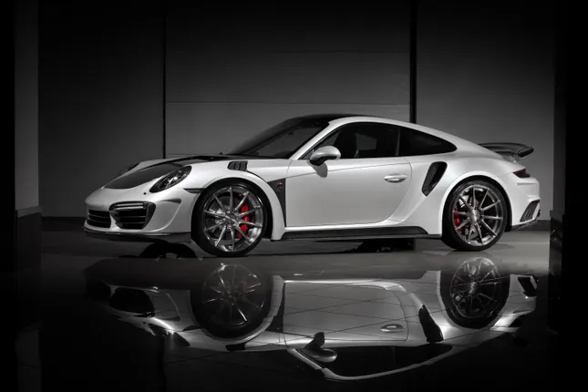
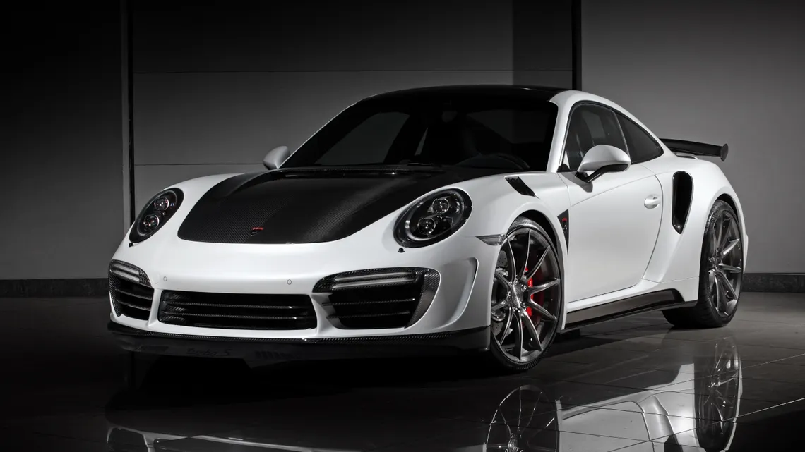

Porsche 911 Turbo S to kultowy samochód sportowy produkowany przez niemiecką firmę Porsche. Ten model jest wyposażony w silnik 3,8 litra o mocy 650 KM i osiąga prędkość maksymalną 330 km/h. Wnętrze samochodu jest bardzo nowoczesne i wygodne, a na zewnątrz prezentuje się bardzo agresywnie.
Model 911 Turbo S to jedna z najbardziej zaawansowanych technologicznie wersji Porsche 911. Samochód ten jest wyposażony w silnik 3,8 litra o mocy 650 KM i osiąga prędkość maksymalną 330 km/h. Wnętrze samochodu jest bardzo nowoczesne i wygodne, a na zewnątrz prezentuje się bardzo agresywnie.
Model 911 Turbo S to jedna z najbardziej zaawansowanych technologicznie wersji Porsche 911. Samochód ten jest wyposażony w silnik 3,8 litra o mocy 650 KM i osiąga prędkość maksymalną 330 km/h. Wnętrze samochodu jest bardzo nowoczesne i wygodne, a na zewnątrz prezentuje się bardzo agresywnie.